دکتر مسعود گوهری منش
دانشیار گروه مهندسی مکانیک — دانشگاه تربت حیدریه
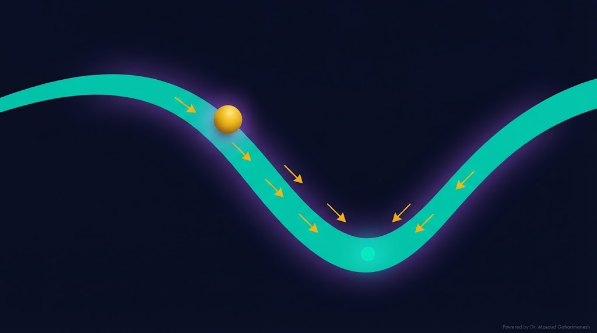
(Unconstrained Optimization & Adam) — جلسه ۲۱ | شروع فاز ۶
دکتر مسعود گوهری منش
دانشیار گروه مهندسی مکانیک — دانشگاه تربت حیدریه
بهینهسازی قلب همهی الگوریتمهای یادگیری است. از آموزش شبکه عصبی تا طراحی سازه، از کنترل ربات تا تنظیم ابرپارامترها — همه اینها مسائل بهینهسازی هستند. امروز پایهی ریاضی این ابزار را میآموزیم.
کمینهسازی Loss
کمینهسازی وزن/هزینه
کمینهسازی خطا و انرژی
بیشینهسازی حساسیت
بیشینهسازی سود
طراحی ترکیبات
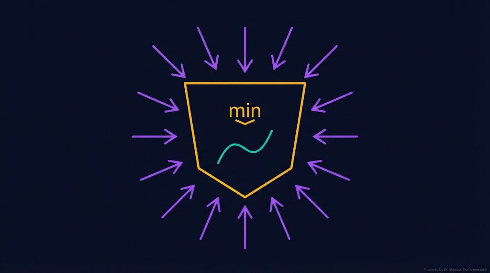
$f$ = تابع هدف (Objective Function) | $x$ = متغیرهای تصمیم
تابع هدف — میخواهیم کمینه کنیم
جواب بهینه — نقطهای که $f$ کمینه است
مقدار بهینه — کمترین مقدار $f$
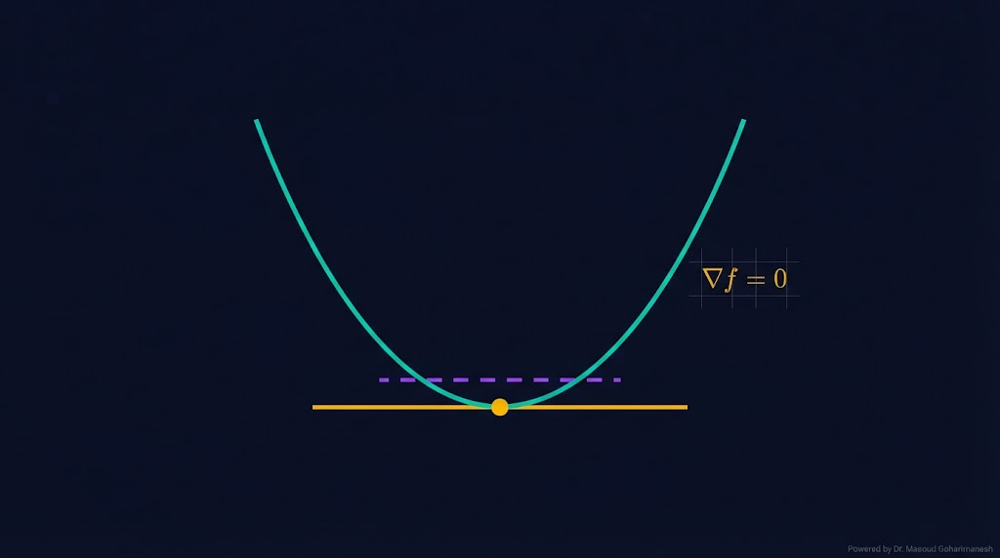
اگر $x^*$ یک کمینهی موضعی باشد و $f$ در آن مشتقپذیر باشد، آنگاه **گرادیان صفر** است:
$\nabla f = [\partial f/\partial x_1، \dots، \partial f/\partial x_n]^T$
نقطهای که $\nabla f = 0$. میتواند کمینه، بیشینه، یا زینی باشد.
همه کمینهها FOC را ارضا میکنند، اما همه نقاط FOC کمینه نیستند.
برای توابع ساده، $\nabla f = 0$ را حل میکنیم. برای پیچیده، روشهای عددی.
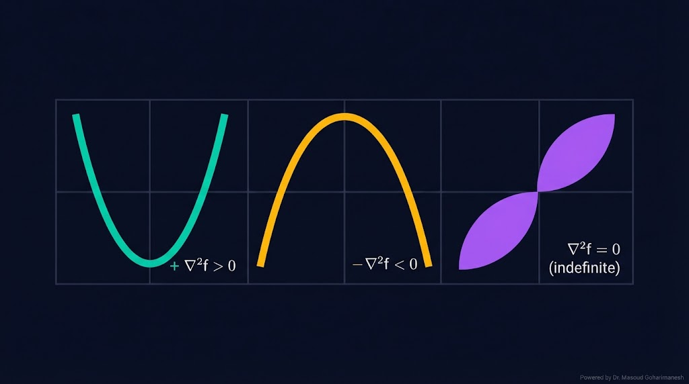
برای تشخیص نوع نقطهی بحرانی، از **هسیَن** (ماتریس مشتقات دوم) استفاده میکنیم:

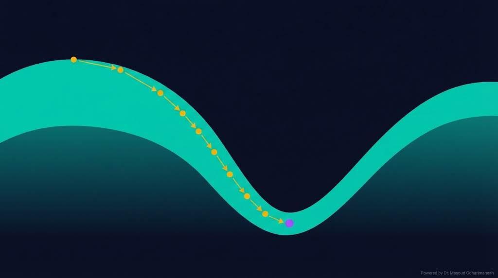
$\eta$ = نرخ یادگیری | $\nabla f$ = گرادیان
همه داده، دقیق، کند
یک نمونه، سریع، نویزی
استاندارد صنعتی
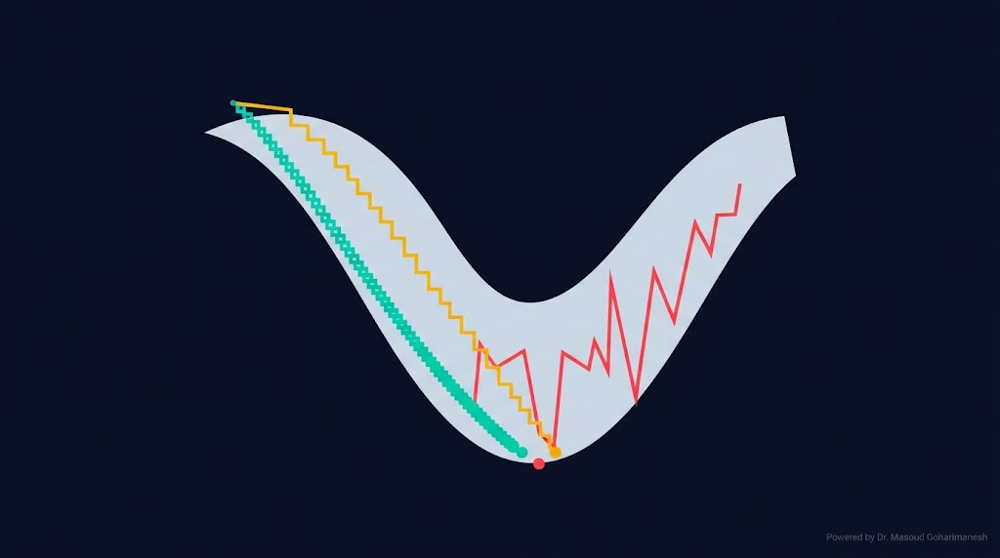
Learning rate ($\eta$) تعیینکنندهی اندازه گام است. انتخاب درست آن، تفاوت بین موفقیت و شکست است:
آموزش بسیار کند، احتمال گیر افتادن در local min
$\eta < 10^{-4}$
آموزش سریع و پایدار
$\eta \in [10^{-3}، 10^{-2}]$
نوسان، انفجار گرادیان، عدم همگرایی
$\eta > 0.1$
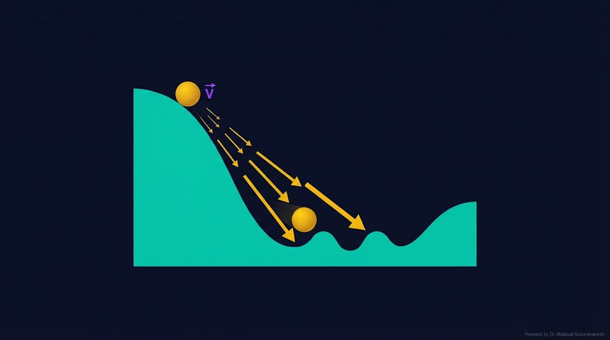
Momentum گرادیانهای قبلی را جمع میکند تا از نوسان و local min جلوگیری کند:
$\beta \in [0.9، 0.99]$ — ضریب اصطکاک (معمولاً ۰.۹)
همگرایی سریعتر
پایدارتر
بهتر
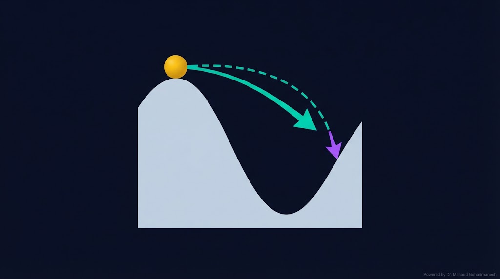
در Nesterov، گرادیان در نقطهی **look-ahead** محاسبه میشود، نه در نقطهی فعلی:
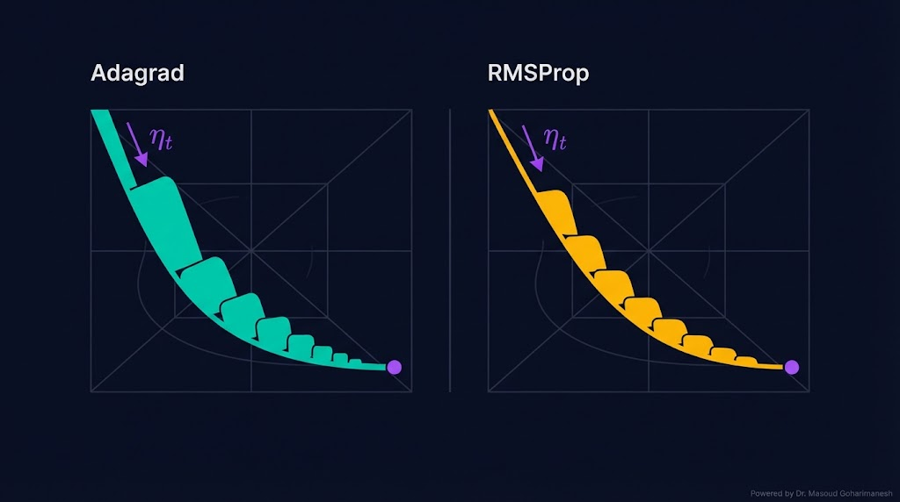
نرخ یادگیری بهطور خودکار کاهش مییابد.
از پنجرهای متحرک برای گرادیان استفاده میکند.
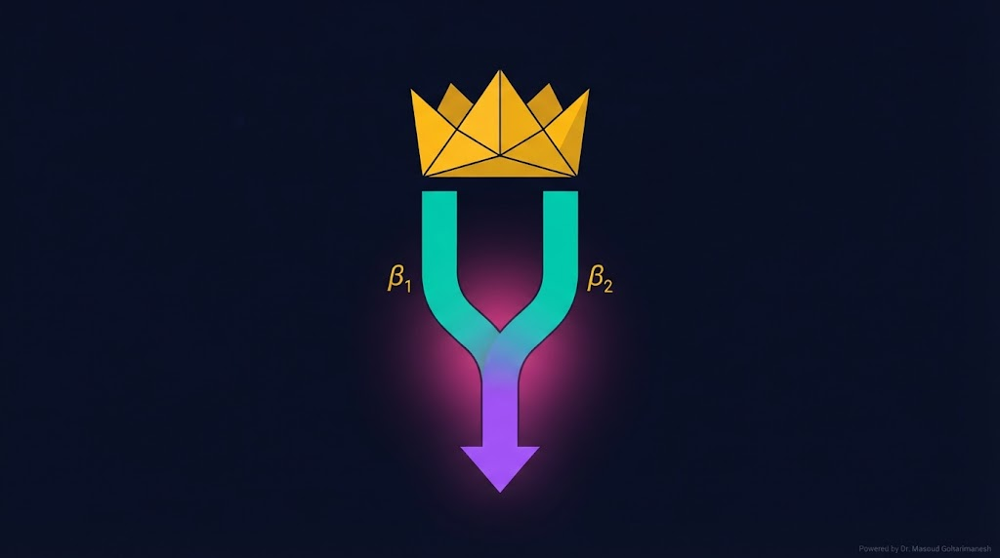
Adam (Adaptive Moment Estimation) ترکیبی از Momentum و RMSProp است. امروز استاندارد صنعتی برای آموزش شبکههای عصبی.
میانگین متحرک گرادیان
میانگین متحرک $g^2$
ترکیب هر دو
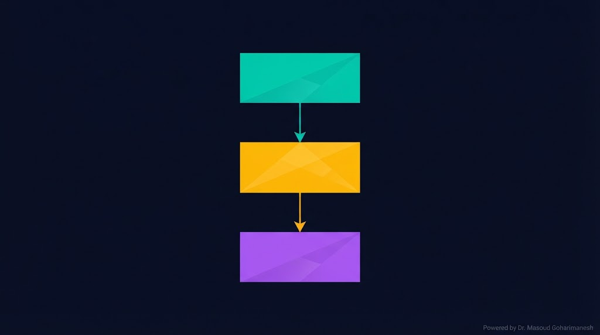
$\beta_1 = 0.9$ معمولاً
$\beta_2 = 0.999$ معمولاً
$\epsilon = 10^{-8}$ برای جلوگیری از تقسیم بر صفر
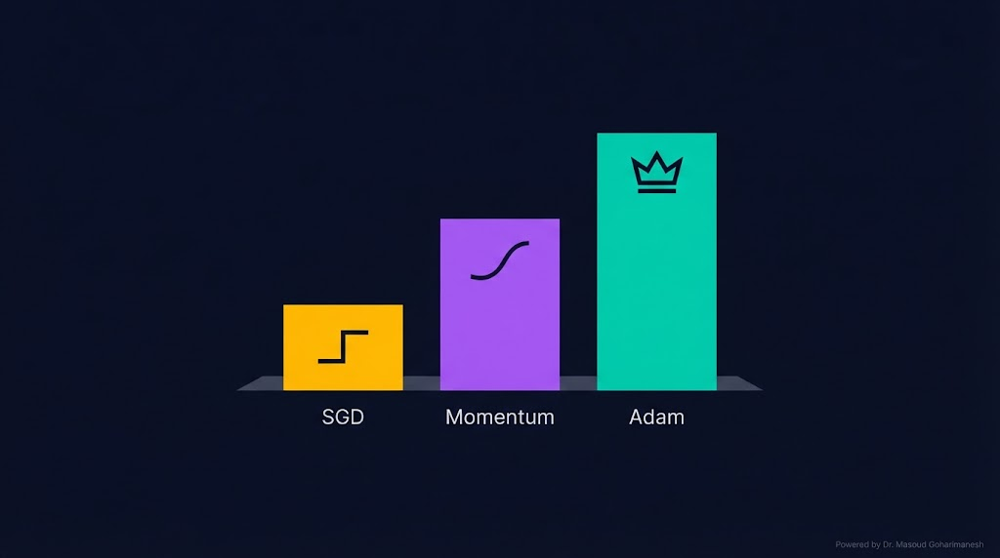
| روش | نرخ تطبیقی | Momentum | کاربرد |
|---|---|---|---|
| SGD | ❌ | ❌ | مسائل ساده |
| Momentum | ❌ | ✅ | غیرمحدب |
| Adagrad | ✅ | ❌ | Sparse data |
| RMSProp | ✅ | ❌ | RNN |
| Adam | ✅ | ✅ | استاندارد صنعتی |
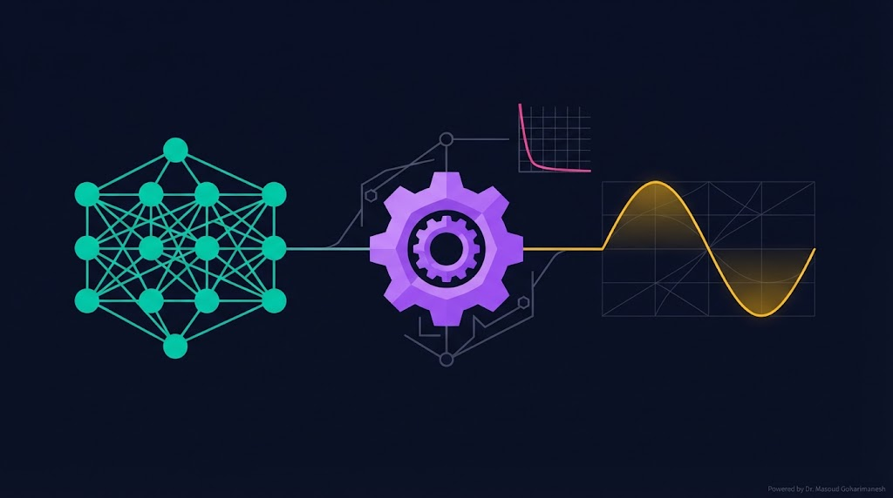
در PINN، Adam استاندارد است، چون:
سه Loss با مقیاسهای مختلف
نیاز به نرخ تطبیقی
زمان آموزش کمتر
# --- Adam در PINN --- optimizer = torch.optim.Adam( model.parameters(), lr=1e-3, betas=(0.9, 0.999), eps=1e-8 ) # --- آموزش --- for epoch in range(epochs): optimizer.zero_grad() loss = compute_loss(model) loss.backward() optimizer.step()
# ============================================ # Adam from scratch (NumPy) # ============================================ import numpy as np def adam(f, grad, x0, lr=0.01, beta1=0.9, beta2=0.999, eps=1e-8, n_iter=1000): """Adam optimizer from scratch""" x = x0.copy() m = np.zeros_like(x) v = np.zeros_like(x) history = [x.copy()] for t in range(1, n_iter + 1): g = grad(x) # Momentum m = beta1 * m + (1 - beta1) * g # Variance v = beta2 * v + (1 - beta2) * g**2 # Bias correction m_hat = m / (1 - beta1**t) v_hat = v / (1 - beta2**t) # Update x = x - lr * m_hat / (np.sqrt(v_hat) + eps) history.append(x.copy()) return x, history # --- تست: f(x) = x^2 + 2x + 1 --- def f(x): return (x**2 + 2*x + 1).sum() def grad(x): return 2*x + 2 x0 = np.array([3.0, -2.0, 1.5]) x_opt, history = adam(f, grad, x0, lr=0.1, n_iter=100) print(f'Initial: {x0}') print(f'Optimum: {x_opt}') print(f'f(x_opt): {f(x_opt):.6f}') # جواب: [-1, -1, -1], f = 0
# ============================================ # Adam in PyTorch # ============================================ import torch import torch.optim as optim # --- پارامترها --- theta = torch.tensor([3.0, -2.0, 1.5], requires_grad=True) # --- Adam --- optimizer = optim.Adam([theta], lr=0.1, betas=(0.9, 0.999)) # --- تابع هدف --- def f(x): return (x**2 + 2*x + 1).sum() # --- آموزش --- for i in range(100): optimizer.zero_grad() loss = f(theta) loss.backward() optimizer.step() if i % 20 == 0: print(f'Iter {i}: theta={theta.data}, f={loss.item():.6f}') print(f'\nFinal theta: {theta.data}') print(f'Final f: {f(theta).item():.6f}')
ارسال تمرینها:
m.goharimanesh@gmail.com
Subject الزامی:
[Advanced Engineering Mathematics] HW21 - نام و نام خانوادگی - شماره دانشجویی
امروز قلب همهی الگوریتمهای یادگیری را شناختید! 🌟
قلب Adam — استاندارد صنعتی
بهینهسازی با قید، لاگرانژ، KKT
دکتر مسعود گوهری منش
دانشیار گروه مهندسی مکانیک — دانشگاه تربیت حیدریه
🇮🇷 با افتخار برای دانشجویان مکاترونیک 🇮🇷
ابن هیثم (۹۶۵–۱۰۴۰ م) در کتاب «کتاب المناظر» (Book of Optics) روش علمی تجربی را بنیان گذاشت:
در بهینهسازی، هر گام گرادیان کاهشی، مانند یک آزمایش تجربی است که فرضیه (پارامتر) را اصلاح میکند:
ابن هیثم هزار سال پیش، روش آزمایش و اصلاح را برای فهم نور بنیان گذاشت. امروز، Adam همان فلسفه را با میلیونها پارامتر و GPU پیاده میکند — اما ایدهی اصلی یکسان است: از فرضیه، به مشاهده، به اصلاح، و در نهایت به نتیجه دقیق.